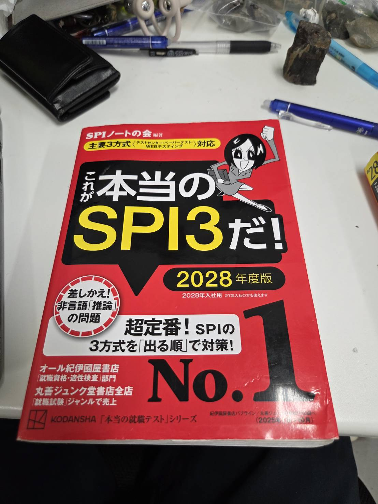

やっと！SPIの本が終わった！
どんだけ時間かけるんよ、という話ではあるんですけどね。

やっと終わった！
やっと！SPIの本が終わりました！ ……って、いや、どんだけ時間かけるんよって話ではあるんですけどね。 ほんと、時間がかかりました。
始めたのは7月より前。そこから数えて、なんと2ヶ月です。 最後のページまでたどり着いた瞬間は、素直にうれしかったです。 ただ、そのうれしさの半分くらいは「やっと解放された…」という安心でした。
「がんばれば1日で終わる」と言われて
実はこの本、始めるきっかけは友達の一言でした。 「SPIの本なんて、がんばれば1日で終わるよ」と言われたんです。 それを聞いて「なんや、そんなもんか」と軽い気持ちで始めたのが運の尽き。
結果は、1日どころか2ヶ月。（笑） 時間かかりすぎでしょ、どないすんねんほんまに、と自分でツッコんでいます。 友達にはまだ報告していないので、たぶんバレたら笑われます。
2ヶ月かけて分かったこと
まず、「1日で終わる」のは、きっと集中してやり切れる人の話だということ。 私のように、気が向いたときに少しずつ進めるタイプだと、気づけば何週間も本を開いていない、なんてこともありました。 そこから再開するたびに、前にやった内容を思い出すところから始めるので、なかなか前に進みません。
それでも、途中でやめずに最後まで終わらせられたのは、自分をほめていいところだと思っています。 遅くても、終わったものは終わったのです。 ……と、自分に言い聞かせています。
気を取り直して、次へ
とはいえ、いつまでも浸っているわけにはいきません。 流石にやばいし、そろそろ本気を出さないといけない時期です。 気持ちを切り替えて、次の問題集に移ります。
今回の反省を生かして、次はもう少しペースを決めて進めるつもりです。 うまくいったらまた報告しますし、うまくいかなかったらそれはそれでネタにします。 気まぐれに、ぼちぼちがんばります。